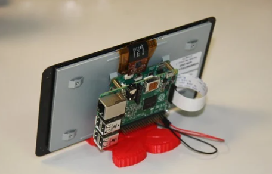

Détection des maladies des plantes par Deep Learning

Objectif du projet
Concevoir un système intelligent basé sur le deep learning capable de détecter et classifier les maladies des plantes à partir d’images. L’objectif est de fournir une aide rapide et accessible aux agriculteurs pour le diagnostic des cultures.
Architecture du système
- Raspberry Pi comme plateforme embarquée
- Caméra pour la capture d’images de feuilles
- Réseau de neurones convolutif (CNN) entraîné sur des images de feuilles saines et malades
- Classification des maladies : mildiou, taches foliaires, oïdium, etc.
- Affichage du diagnostic sur un écran LCD
Technologies & outils
- Python, TensorFlow, Keras
- OpenCV pour le traitement d’image
- Google Colab (entraînement du modèle)
- Raspberry Pi, caméra USB, écran LCD
Résultats
- Détection visuelle fiable avec un modèle CNN
- Temps de traitement optimisé pour Raspberry Pi
- Expérimentation réussie sur plusieurs types de feuilles
Présentation en ligne
Tu peux consulter la présentation détaillée du projet sur Canva :
📽 Voir la présentation
← Retour aux projets